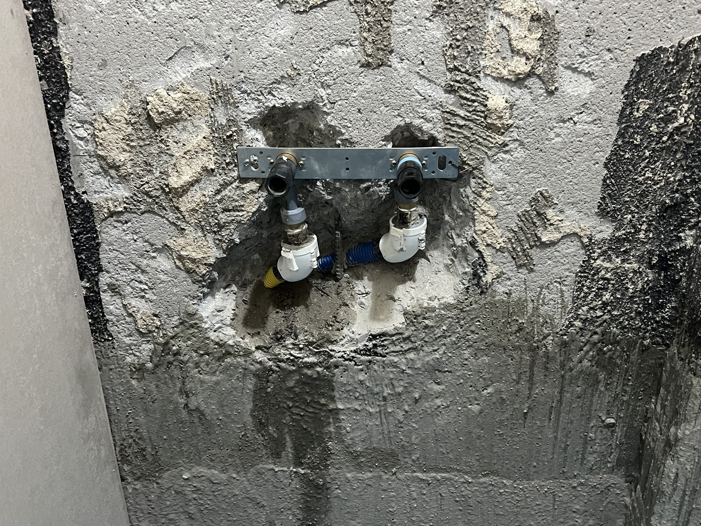
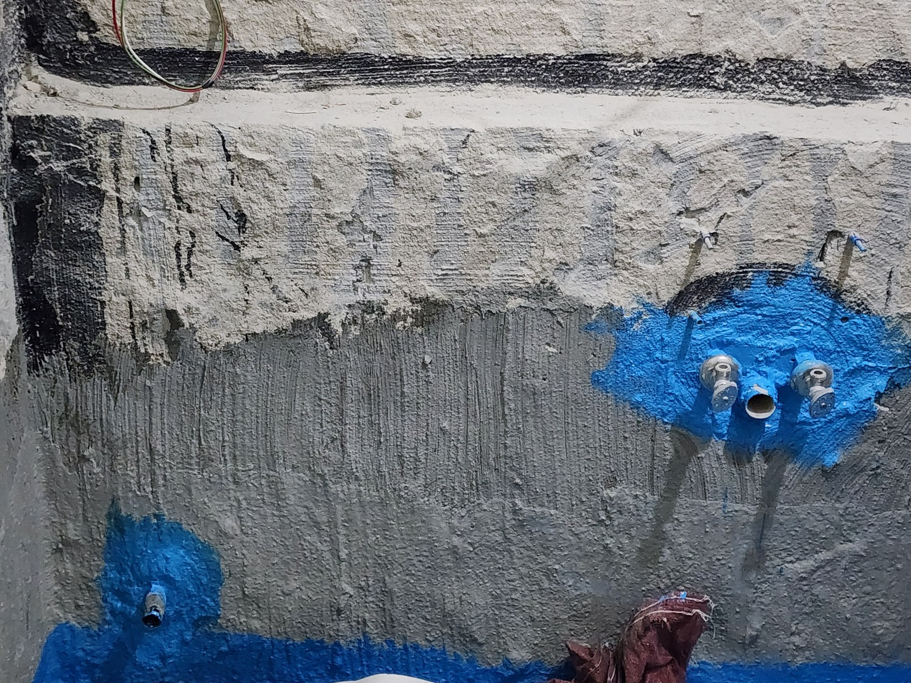
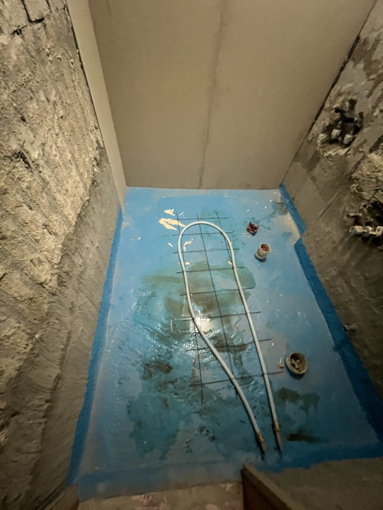
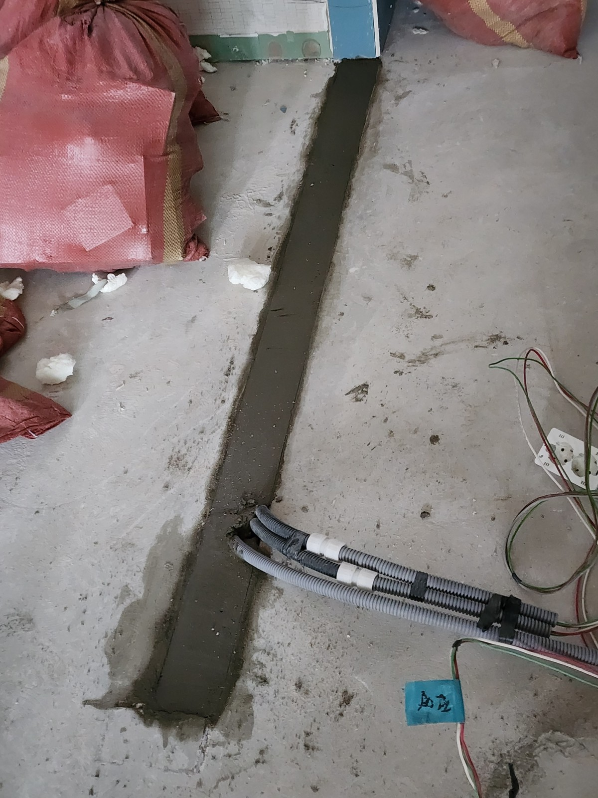

효성혜링턴 욕실 설비 작업｜난방배관·수전 연결부와 부분 미장

현장 작업 한눈에 보기
- 현장
- 효성혜링턴 · 욕실 설비와 일부 바닥
- 문제
- 마감 전 설비 공정 기록
- 작업
- 수전 연결부 작업·욕실 난방배관 배치
일부 바닥 미장 - 결과
- 설비 노출 단계와 부분 미장 기록
최종 욕실 마감·운전시험은 미확인
욕실 마감 전에 남겨 둔 설비 사진입니다. 수전 연결부와 바닥 난방배관 배치, 별도 바닥 구간의 부분 미장을 나누어 소개합니다.
마감 전에 남긴 현장 이야기
안녕하세요. 만물인테리어입니다. 오늘은 효성혜링턴 현장에서 마감 전에 남겨 둔 설비 사진을 소개합니다.
2026년 8월 21일 기록에는 수전 위치 변경, 화장실 난방 작업, 바닥 일부 미장이 적혀 있습니다. 서로 다른 작업 구간을 섞지 않고 나누어 보겠습니다.
1. 벽에 드러난 수전 연결부
벽체에 수전 연결부 두 곳과 고정용 부재가 드러나 있습니다. 타일이나 기구가 설치되기 전, 배관이 어디에서 나오는지 남겨 둔 사진입니다.
기록에는 수전 위치 변경으로 적혀 있지만, 이동 전 위치와 실제 이동 거리는 이 사진만으로 비교할 수 없습니다.

2. 벽체 보수와 연결부 주변
또 다른 사진에는 배관이 지나간 벽체의 보수면과 연결부 주변 도포 상태가 보입니다. 기구가 달릴 자리 주변을 기록한 장면입니다.
앞 사진과 정확히 같은 지점인지는 확인이 필요해 일대일 전후 비교로 표시하지 않았습니다.

3. 바닥에 놓인 욕실 난방배관
욕실 바닥에는 흰색 난방배관이 돌아가며 배치돼 있습니다. 배관과 망이 드러난 지금은 바닥 속 구성을 볼 수 있는 단계입니다.
마감된 욕실 사진과 달리, 덮기 전에 어떤 형태로 놓였는지 보여 줍니다.
4. 다른 방향에서 남긴 배관 배치
각도를 바꾸어 바닥 배관의 배치를 한 번 더 남겼습니다. 같은 공정이라도 한 장에 가려진 부분을 다른 방향에서 볼 수 있습니다.
사진으로는 배관 간격의 정확한 수치나 압력·난방 운전 결과까지 확인할 수 없습니다.

5. 별도 바닥 구간의 부분 미장
마지막 사진은 바닥 일부를 길게 미장한 구간입니다. 욕실 난방배관을 덮은 전후 사진으로 연결하지 않고, 같은 현장의 별도 부분 미장 기록으로 구분했습니다.
이 사진을 근거로 욕실 전체나 후속 바닥 마감이 끝났다고 표현하지는 않았습니다.

확인한 범위와 상담 안내
욕실 공사는 눈에 보이는 타일·기구뿐 아니라 그 아래 설비 기록도 중요합니다. 바닥 난방, 수전 위치, 벽체·바닥 복구 범위를 나누어 상담해 주세요.
만물인테리어 상담 010-2397-8629. 최종 작업 범위와 금액은 현장 확인 후 안내합니다.